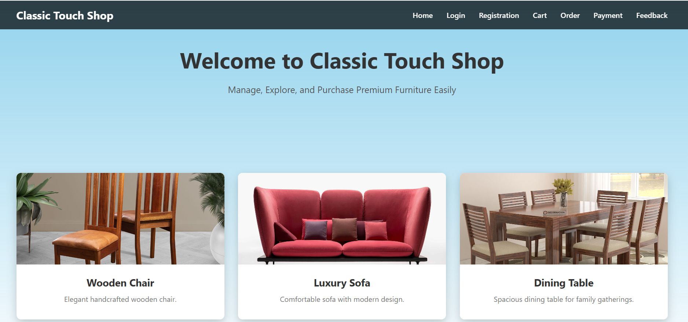

📌 Project Overview
The Furniture Shop Management System is a web-based application designed to present furniture products in a simple, attractive and user-friendly manner.
The system allows users to explore different furniture products such as chairs, sofas and dining tables through an organized and responsive interface.
🎯 Problem Statement
Traditional furniture shops may require customers to manually explore different products and categories. It can be difficult to present all available products in an attractive and organized way.
This project provides a digital solution where furniture products can be displayed clearly on a website.
👩💻 My Role
This was an individual project. I worked on the complete project including planning, designing, coding, testing and documentation.
- Website Planning
- UI Design
- HTML Development
- CSS Styling
- JavaScript Functionality
- Testing and Improvements
💻 Technologies Used
⭐ Key Features
- Attractive home page
- Furniture product display
- Product categories
- User-friendly interface
- Responsive design
- Easy navigation
- Clean and professional UI
⚙️ Challenges & Solutions
Challenge 1: Product Presentation
It was important to display furniture products clearly and attractively.
Solution: Product cards and organized layouts were used to improve the presentation.
Challenge 2: Responsive Design
The website needed to work properly on different screen sizes.
Solution: CSS media queries and responsive layouts were used.
🚀 Project Result
The final website provides a clean, modern and user-friendly platform for displaying furniture products. The design makes it easier for users to explore products and understand the available options.
🔮 Future Scope
- Online product ordering
- Shopping cart
- User login and registration
- Online payment system
- Product search and filtering
- Admin dashboard
- Database integration